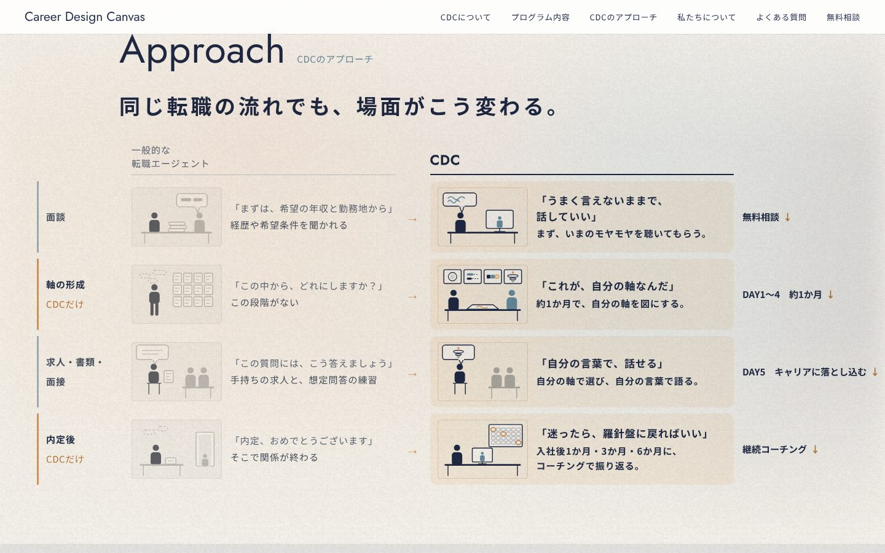
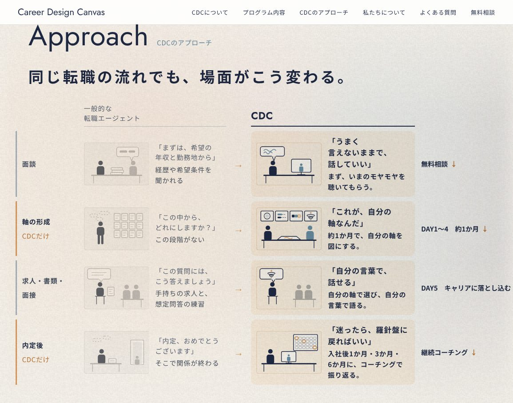
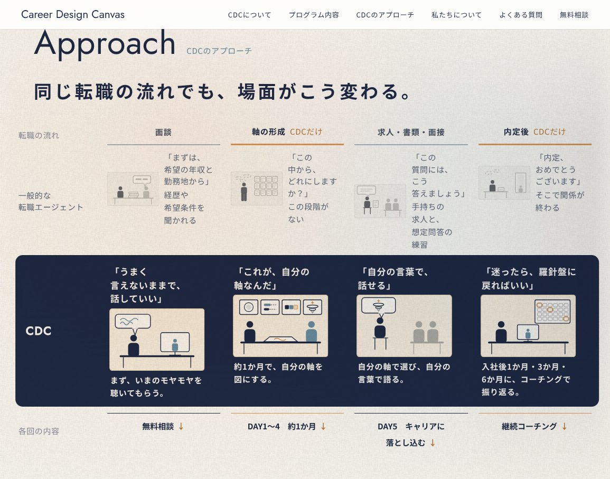
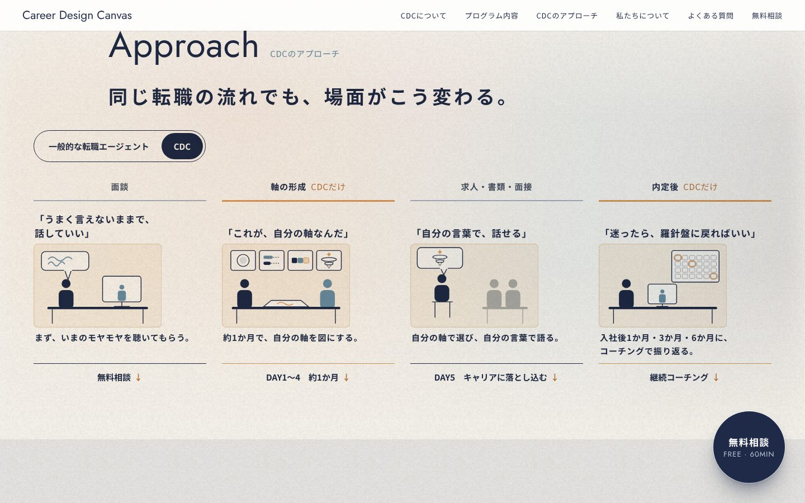
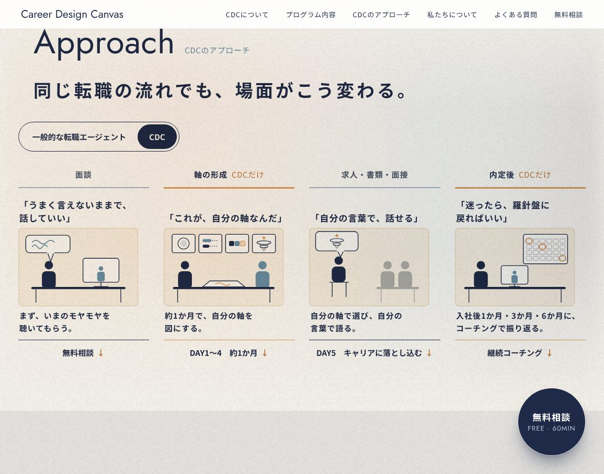

「CDCのアプローチ（同じ転職の流れでも、場面がこう変わる）」見比べ 2（11/08）
「一画面に収めたい、みちみちにしない、見比べやすく」を受けて、詰め込まずに収まる3つの形にしました（前の A〜C は 見比べ 1）。どれも画面の中のスクロールはありません。
D 段ごとに横一列（左＝エージェント → 右＝CDC）
- 一つの段の違いを、左から右へ目を動かすだけで読める
- CDC 側は淡い地、エージェント側は色を落とす

1155×907
ページで見るE CDC の段を紺の帯で通す
- 比べる表でよくある「選ぶ列を濃くする」見せ方。エージェントは小さな絵と一行、CDC が主役
- 流れ（面談〜内定後）は上の見出し
 1155×907
1155×907
ページで見るF 同じ場所で切り替える
- 上の「一般的な転職エージェント｜CDC」を押す（触れる）と、4つの場面が同じ位置で入れ替わる。違うところだけが動くので差が目に入る
- 一度に見せる量が半分になり、いちばんゆとりがある。そのかわり両方を同時には見られない

1155×907
ページで見る（切り替えてみてください）